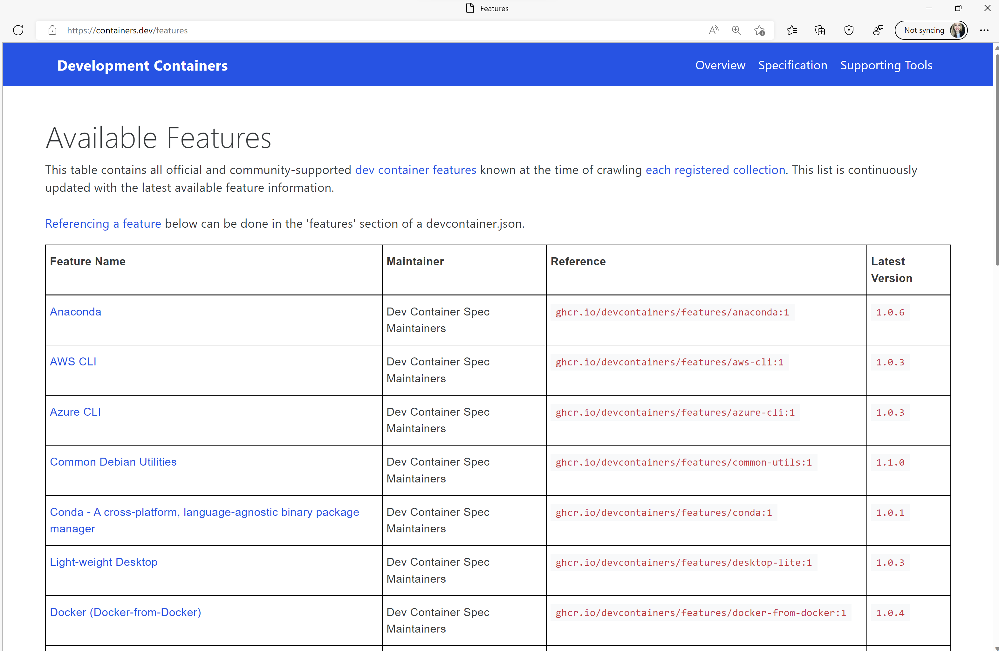

Custom Dev Container Features
September 15, 2022 by Brigit Murtaugh, @BrigitMurtaugh
We've all had that moment when setting up our development environment – "Oh, I just need one more thing!" – that "thing" being one more language or toolset (or maybe a few more 😊) to work on your project.
Development containers are a great way to simplify environment set up - they provide a complete coding environment with the tools your project needs. They're configured using an image, Dockerfile, or Docker Compose file and devcontainer.json, which is a metadata format used to enrich containers with development specific content and settings.
When creating dev containers, you may have the same "I just need one more thing!" reaction repeatedly – maybe you're using a Node.js image in your Dockerfile and just need to add Git. Or maybe you need to add something more complex, like working with Docker or Kubernetes from within your dev container. Dev containers are great since anyone accessing your code will have the same, consistent experience with all those tools you added – but what's the best way to add them?
What if there was an easy way to install that extra tool in your dev container, simply by mentioning the tool's name and version? Or what if as a tool user or author, you could create an easy way for others to install it? Sharing manual scripts can help with reuse, but when referencing one, you may forget to reference container or tooling settings, such as enabling ptrace support for Go, Rust, or C++ debugging, adding a specific entry point to fire on container start, or ensuring the right VS Code extensions are included.
Features
We're happy to share that dev container Features help you smoothly get the tools you need in your dev container!
Features are self-contained units of installation code, container configuration, and/or settings and extensions designed to enable new development capabilities in your dev container. They can be built to work with a wide range of base container images. As part of our work on the open dev container specification, we've made some improvements to where you can grab pre-created Features and how you can author and distribute your own.
Let's see what's new and how you can get started with Features from any dev container supporting tool or service (such as the VS Code Dev Containers extension or GitHub Codespaces)!
Adding Features to your dev container
Dev Container Features provide a quick way to associate dev container metadata with some install steps. You can add them to your dev containers through a simple reference.
These Features can now be stored as OCI Artifacts in any supporting container registry, which means you can reference them using the same types of identifiers you would use to reference a container image. We've moved some early Features that were in the vscode-dev-containers repository into a new devcontainers/features repository where they are published using this new approach.
Referencing different Features from the devcontainers/features repository is as simple as adding a features property to your devcontainer.json. Each Feature has a README.md that shows how to reference the Feature and which options are available for it.
The example below installs the go and docker-in-docker Features:
"name": "my-project-devcontainer",
"image": "mcr.microsoft.com/devcontainers/base:ubuntu",
"features": {
"ghcr.io/devcontainers/features/go:1": {
"version": "1.18"
},
"ghcr.io/devcontainers/features/docker-in-docker:1": {
"version": "latest",
"moby": true
}
}
You can also explore official and publicly contributed Features on the specification site. Any Feature can be added by editing devcontainer.json, and publicly published ones can be added through existing dev container configuration experiences (such as available in the VS Code Dev Containers extension).

You can even use dev containers with Features from your favorite CI system using the dev container CLI, a GitHub Action, or an Azure DevOps task. We have a GitHub Action and Azure DevOps task available in the devcontainers/ci repository. The dev container CLI, GitHub Action, or Azure DevOps task can also be used to pre-build images that include Feature contents to speed up start times.
If you'd like to not only use publicly available Features but also create your own private or public ones to share, continue reading!
Authoring
A great place to get started with creating your own Features is the new Features template repository. Beyond including a good template for the contents of a given Feature, the template also includes a GitHub Actions workflow to quickly publish them too, using the GitHub Container Registry (GHCR) for your account to get you up and running as fast as possible. We'll talk more about publishing in a minute.
The source code of a Feature has two components: An install script (install.sh) and a configuration file (devcontainer-feature.json).
+-- feature
| +-- devcontainer-feature.json
| +-- install.sh
| +-- (other files)
install.sh: The installation entry point script – it's conceptually added as a layer of the image's Dockerfile and executed during build-time. This entry point script can install tools such as languages (for example, Ruby) and tools (GitHub CLI).
devcontainer-feature.json: This contains metadata about the Feature, a set of options that can be passed to a Feature's install script during installation, as well as "pieces" of devcontainer.json that will be merged into the final dev container. For example, if any Feature indicates "privileged": true in their configuration, the entire dev container will be started with the --privileged flag.
Features can be authored in a variety of languages, the most straightforward being shell scripts. If a Feature is authored in a different language, information about it should be included in the metadata so that users can make an informed choice about it.
Note: While install.sh will run Features in any language, if you wrote a Feature in an interpreted language that wasn't present in the dev container, the code would fail to execute. Be sure to acquire the language(s) you need as part of install.sh.
You should be sure that Features you release publicly check and install dependencies in addition to the Feature.
Furthermore, public Features are very likely to be used from both arm64 or x86_64 machines - so be sure to adapt to this when possible.
You can review devcontainer-feature.json properties in the specification, along with public examples in the devcontainers/features repository.
Now that we've seen how to create a Feature, how can I distribute it to others?
Distribution
Features are distributed as tarballs. The tarball contains the entire contents of the Feature subdirectory, including the devcontainer-feature.json, install.sh, and any other files in the directory.
The Open Container Initiative (OCI) defines industry standards for containers and container resources. We treat Features as OCI Artifacts and use the concept of an OCI Registry to distribute Features.
The Features template repository mentioned above includes a GitHub Actions workflow to automate the publishing process. It packages the Feature into a tarball and publishes the assets as an OCI artifact to GHCR. Trigger the release.yaml workflow from the template repository by selecting it on the left of the repository's Actions tab on GitHub. The GitHub Action will publish the Feature to GHCR under the <owner>/<repo> namespace. A Feature is only republished when the version property in its devcontainer-feature.json is updated.
Note: One manual step with GHCR is to mark the OCI package as "public". This only has to be done once per Feature. Private Features do not require this step and may be accessed as long as you've logged into the Docker CLI using the credentials for your registry.
Sharing your Features with the community
If you'd like your contributions to appear in the VS Code Dev Containers or GitHub Codespaces UI for dev container creation, you can do the following steps:
- Go to devcontainers.github.io (the GitHub repo backing containers.dev)
- Open a PR to modify the
collection-index.ymlfile
Once merged, your change will appear at containers.dev/collections.
Feature installation order
What if my Feature should only install after another one? As a Feature author, you may find that your Feature should install before or after other Features. In your devcontainer-feature.json, you can use the installsAfter property to list Features that should execute before it.
As an end user, you can further control the order of execution with the overrideFeatureInstallOrder property in your devcontainer.json. Any Feature IDs in this array will be installed before all other Features, in the provided order. As an example:
"features": {
"ghcr.io/devcontainers/features/java:1",
"ghcr.io/devcontainers/features/node:1",
},
"overrideFeatureInstallOrder": [
"ghcr.io/devcontainers/features/node"
]
By default, Features are installed on top of a base image in an order determined as optimal by the implementing tool.
If any of the following properties are provided in the Feature's devcontainer-feature.json, or the user's devcontainer.json, the order indicated by these propert(ies) are respected (with decreasing precedence).
- The
overrideFeatureInstallOrderproperty in user'sdevcontainer.json. Allows users to control the order of execution of their Features. - The
installsAfterproperty defined as part of a Feature'sdevcontainer-feature.json.
You can read more about Feature execution and installation order in the specification.
What else is new?
Along with the new Features repository, we recently open sourced a new devcontainers/images repository where we host a specific set of images that were previously in the vscode-dev-containers repository.
We're developing a community distribution plan for dev container templates (what we refer to as "definitions" in vscode-dev-containers), which we anticipate to be similar to Features. We'll be sure to post an update in the vscode-dev-containers repository, as we did when announcing the new Features and images repos.
How can I learn more?
This post just touches the surface of what you can do with Features, and we're excited for you to try them out!
As linked throughout the above content, the best spots to learn more about what goes into Features and how to distribute them are the Features and Features distribution pages of the dev container specification.
We look forward to your feedback as you use, create, and publish Features – we'd love to hear how they're working for you in the Features and Features distribution issue proposals.
If you're interested in getting involved with the specification overall or wiring up another tool to take advantage of it, check out the dev container spec and CLI repositories.
Happy dev container creation, and happy coding!
Brigit Murtaugh, @BrigitMurtaugh